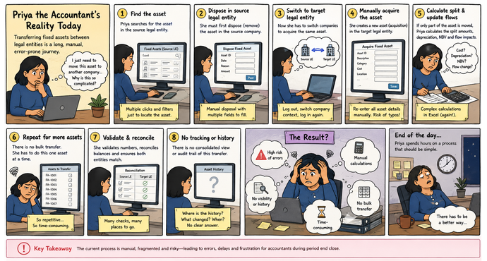

Faster Asset Transfers
↓ 60% transfer completion time
Reduce the time accountants spend completing cross-legal-entity transfers through a single guided workflow.
Microsoft Finance & Operations | 2025
Redesigning the end-to-end workflow for transferring fixed assets between legal entities, reducing errors and manual effort for accountants.
The Problem

Design opportunity
↓ 60% transfer completion time
Reduce the time accountants spend completing cross-legal-entity transfers through a single guided workflow.
↓ 70% manual data entry
Auto-populate asset information across legal entities, reducing repetitive inputs and operational effort.
↓ 50% transfer errors
Reduce errors caused by manual data entry, asset-value calculations, and reconciliation.
55% → 88% task completion rate
Enable accountants to successfully complete asset transfers with fewer interruptions and less dependency on manual processes.
100% transfer history captured
Provide a traceable record of transfers across source and destination legal entities for easier validation and auditing.
Allow accountants to process multiple assets together instead of repeating the transfer workflow asset by asset.
Automate split values, depreciation, and NBV calculations to reduce cognitive load and calculation errors.